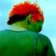

creative stuff
Herein dwells examples of the works of you talented
noise
and THE
PROGRAM
bods, with links to artist profiles and more info about the artists themselves. Onya punters.
Displaying page 1 of 3, containing 1-15 of 32 found items.
Pic //
Name //
In Brief //
bed tv
Black and white photographic work taken from video off a TV.
In The Dark
I put my camera on a tripod, said "run"...
The Dancer
I like dancing.
Fold
I like to observe people.
Choke
My real name is Polixenni (it's my grandmother's name).
Ocean series 2
The inspiration for my ocean series was my life and my world.
Untitled
I create fashion images that harmonise a garment.
Ocean series 1
The inspiration for my ocean series was my life and my world.
Untitled
"I am a very visual person...."

Soar
I really like the look of trains and back streets, urban jungle stuff.
Shots Of Me In My Bathroom 1
I like bathrooms.
Body Series 1/5
contrast of flesh/concrete
Body Series 2/6
Contrast flesh/concrete
Body Series 3/6
Contrast flesh/concrete
Body Series 4/6
Contrast flesh/concrete
1
2
3
Next
status //
Guest. You may
Register
or
Log In
.
Australian Central Standard Time (GMT +09:30) //
10:56 PM, Sat, 5 Mar, 2005.